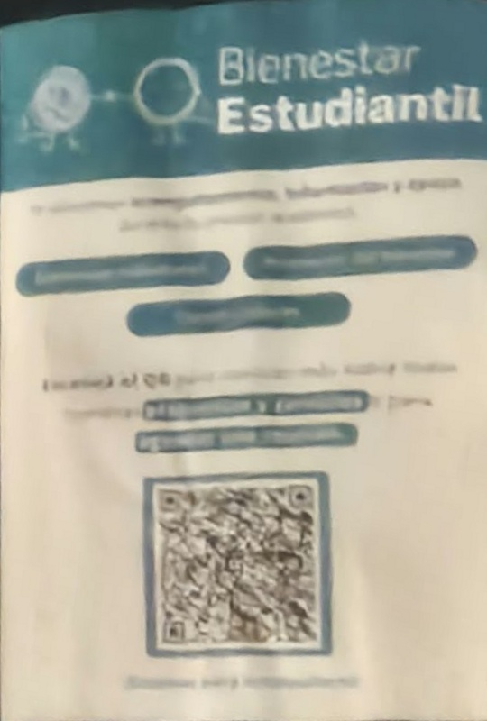

SIN IMPRESIONES NUEVAS
Tres pósteres.
El mismo secreto.
El juego reconoce los pósteres que ya están colocados en UCU. Estos recortes se obtuvieron de las dos fotos proporcionadas, corrigiendo su perspectiva. No se añaden detalles artificiales ni se garantiza una detección física sin probarla.

01 · BRÚJULA
Cursos de docencia · LUDUS
Junto al letrero Centro LUDUS que aparece en la foto original. Este es el punto de inicio. El equipo debe indicar a los jugadores dónde está ese sector.
02 · LLAVE
Pastoral Universitaria
El póster verde con una fotografía grupal. Está en la cartelera de la segunda foto. Confirmar piso y sector antes de la evaluación.

03 · CRISTAL Y TESORO
Bienestar Estudiantil
El póster de encabezado azul, debajo del de Pastoral en la foto. El último escaneo abre el cofre virtual.
Cómo probar
- Abre el juego por HTTPS en el celular. Habilita la cámara y enfoca el póster de LUDUS completo, manteniendo el teléfono quieto y evitando reflejos.
- Comprueba que aparece la brújula, el progreso cambia a 1/3 y la pista siguiente queda guardada.
- Pulsa Continuar con Pastoral. El juego recarga únicamente el reconocimiento del objetivo siguiente. Enfoca el póster verde y comprueba 2/3.
- Continúa con Bienestar y comprueba 3/3, el mensaje final y el cofre AR.
- Cierra y vuelve a entrar para verificar la reanudación. Reinicia el progreso para el siguiente jugador.
Para una prueba inicial de escritorio, abre estas imágenes en otra pantalla y enfócalas con el celular. Eso comprueba el flujo, pero no sustituye probar frente a los pósteres reales. Las fotos de Pastoral y Bienestar tienen desenfoque y reflejos; si fallan, habrá que actualizar las referencias.
Antes de invitar a los testers
Comprueba que los pósteres siguen colocados, que el acceso está permitido y que los tres puntos forman parte del recorrido aceptado para la actividad en Sacré Coeur. No se dispone todavía de piso y sector exactos. Confirma con el docente la aceptación del reconocimiento NFT como alternativa a los marcadores cuadrados.
El QR impreso forma parte del diseño, pero el juego no abre su enlace ni lo utiliza como un lector QR. No es necesario imprimir las referencias.
A-Frame 1.8.0 · AR.js 3.4.8 · Image Tracking NFT